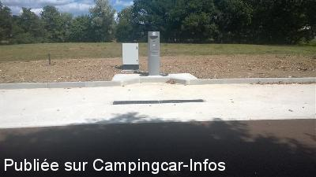
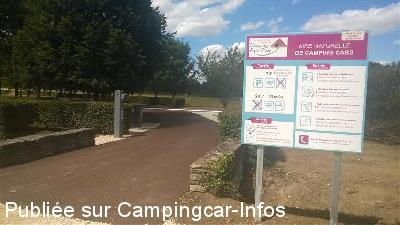
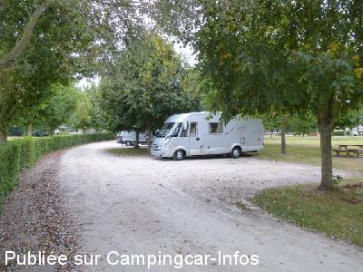
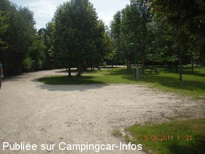
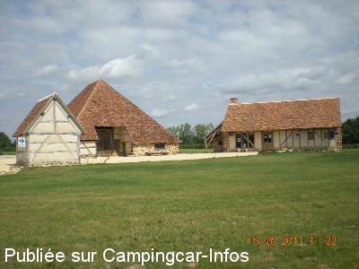
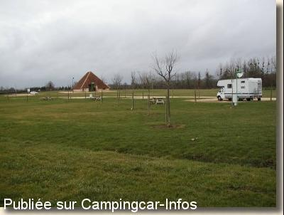

ASN = Aire de services avec stationnement nuit possible de :
VAILLY SUR SAULDRE
(N° 818)
Accès/adresse :
Champ de Foire, D923
Aire naturelle de la Sauldre
18260 VAILLY SUR SAULDRE
Aire naturelle de la Sauldre
18260 VAILLY SUR SAULDRE
Latitude : (Nord) 47.45717° Décimaux ou 47° 27′ 25′′
Longitude : (Est) 2.64666° Décimaux ou 2° 38′ 47′′
Tarif : 2015
Stationnement, vidanges : 7 €
Eau : 2 €
Type de borne : Artisanale
Services :


Autres informations :
15 emplacements
Tél : +33 (0)248 811 260
Tél : +33 (0)248 738 757

Le 06/08/2015 par pdn2008

Le 06/08/2015 par pdn2008

Le 02/01/2014 par DIDI 31

Le 21/06/2011 par Michele.be

Le 21/06/2011 par Michele.be

Le 06/03/2003 par Mchr68
de
Laurent
le 01/05/2016 :
Bonjour,
La halte pour camping car de Vailly existe depuis fort longtemps. Je trouve cependant dommageable que suite aux travaux de modification de l'aire, la barrière d'accès pour le stationnement n'ai pas été placée après la borne de service.
Cordialement.
Bonjour,
La halte pour camping car de Vailly existe depuis fort longtemps. Je trouve cependant dommageable que suite aux travaux de modification de l'aire, la barrière d'accès pour le stationnement n'ai pas été placée après la borne de service.
Cordialement.
de
raxhon marc
le 04/01/2014 :
somme passer la le 03/01/2013 pour passer la nuit .
pas mal de passage de voiture mais avons bien dormit
somme passer la le 03/01/2013 pour passer la nuit .
pas mal de passage de voiture mais avons bien dormit
de
pivoine
le 29/09/2013 :
Sommes passés le 22 septembre mais trop bruyant avec le carrefour à proximité. Ne sommes pas restés.
Sommes passés le 22 septembre mais trop bruyant avec le carrefour à proximité. Ne sommes pas restés.
de
Napapiiri
le 18/07/2013 :
Le 8 juillet, il y avait de l'électricité.
Le 8 juillet, il y avait de l'électricité.
de
CHRISTINE
le 18/07/2013 :
Bonjour,
De passage en juillet 2013, emplacements stabilisés, je confirme carrefour un peu bruyant. Pas de fourniture electrique. Une personne passe pour encaisser.
Bonjour,
De passage en juillet 2013, emplacements stabilisés, je confirme carrefour un peu bruyant. Pas de fourniture electrique. Une personne passe pour encaisser.
de
Anne Xavier
le 30/07/2012 :
De passage par hasard,mais tant mieux,car malgré un orage ce soir-là,un accueil sympas,et des commerçants agréables,comme à l'Office du Tourisme.
Une ville très jolie,et des balades super.
Merci à la mairie,pour l'aménagement de l'aire camping-car,très propre,et bien entretenu.Bravo.
De passage par hasard,mais tant mieux,car malgré un orage ce soir-là,un accueil sympas,et des commerçants agréables,comme à l'Office du Tourisme.
Une ville très jolie,et des balades super.
Merci à la mairie,pour l'aménagement de l'aire camping-car,très propre,et bien entretenu.Bravo.
de
Udson75
le 10/07/2012 :
§Aire bien aménagée , un peu bruyante de jour (carrefour avec cirulation de camions à proximité)
Pas d'électricité fin mai 2012 suite à vandalisme.
Le tarif de 3.50€ est maintenant applicable tous les jours ( plus de gratuité à partir de la deuxième nuitée consécutive comme auparavant)
§Aire bien aménagée , un peu bruyante de jour (carrefour avec cirulation de camions à proximité)
Pas d'électricité fin mai 2012 suite à vandalisme.
Le tarif de 3.50€ est maintenant applicable tous les jours ( plus de gratuité à partir de la deuxième nuitée consécutive comme auparavant)
de
michele.be
le 21/06/2011 :
De passage le 15/6/2011 je confirme les commentaires précédents
Un vrai camping pour 3,5€
De passage le 15/6/2011 je confirme les commentaires précédents
Un vrai camping pour 3,5€
de
patouillard
le 28/06/2010 :
Aire impeccable, nous ne regrettons pas les 3,50€ pour le stationnement. Possibilité de visiter la grange pyramidale tout à côté et tout récemment l'office de tourisme vient d'être terminé, possibilité d'obtenir de nombreux renseignements pour visiter les alentours. Merci à la commune.
Aire impeccable, nous ne regrettons pas les 3,50€ pour le stationnement. Possibilité de visiter la grange pyramidale tout à côté et tout récemment l'office de tourisme vient d'être terminé, possibilité d'obtenir de nombreux renseignements pour visiter les alentours. Merci à la commune.
de
ALBERT J et M
le 08/09/2009 :
Une aire comme on en souhaiterait beaucoup. 3,50€ la nuit avec des toilettes, douches payantes, partie vaisselle et lavage linge. Très ombragée. Nous y avons passé une semaine car la région regorge de visites intéressantes (Briare - Guédelon - Musées divers). Nous y reviendrons certainement. §
Une aire comme on en souhaiterait beaucoup. 3,50€ la nuit avec des toilettes, douches payantes, partie vaisselle et lavage linge. Très ombragée. Nous y avons passé une semaine car la région regorge de visites intéressantes (Briare - Guédelon - Musées divers). Nous y reviendrons certainement. §
de
Véronique&Pierre
le 29/05/2007 :
Bonjour. Nous avons passé une petit week-end sur cette aire vraiment très agréable. Avec l'électricité, nous n'avons payé que 5€. L'électricité n'est mise en service qu'au passage d'une personne, le matin ou le soir.
Nous avons trouvé ce petit coin sympa, agréable et super génial pour passer un petit week-end de repos.
Nous qui habitons 80 kms plus haut, cela nous a permis de décompresser et de nous reposer. Merci à la mairie.
Bonjour. Nous avons passé une petit week-end sur cette aire vraiment très agréable. Avec l'électricité, nous n'avons payé que 5€. L'électricité n'est mise en service qu'au passage d'une personne, le matin ou le soir.
Nous avons trouvé ce petit coin sympa, agréable et super génial pour passer un petit week-end de repos.
Nous qui habitons 80 kms plus haut, cela nous a permis de décompresser et de nous reposer. Merci à la mairie.
de
Mr et Mm JOLY
le 23/05/2006 :
Nous sommes restés deux semaines sur l'aire de services de Vailly-sur-Sauldre. L'endoit est super, de très belles installations. Accueil très sympathique, avec une personne très compétente. Merci Monsieur le Maire d'accueillir les camping-cars.
Nous sommes restés deux semaines sur l'aire de services de Vailly-sur-Sauldre. L'endoit est super, de très belles installations. Accueil très sympathique, avec une personne très compétente. Merci Monsieur le Maire d'accueillir les camping-cars.